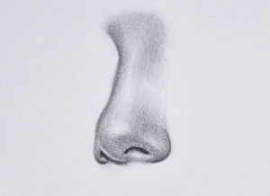
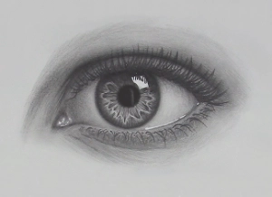
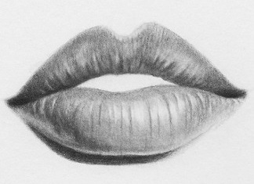
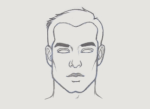
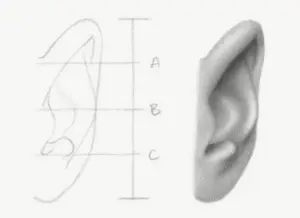
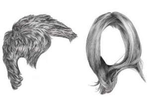
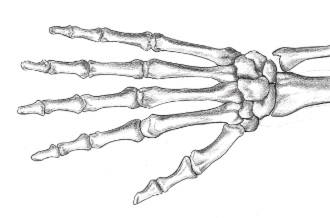

Cómo dibujar una nariz
Aprende a dibujar una nariz realista paso a paso.
Ver tutorial

Cómo dibujar ojos
Descubre técnicas para dibujar ojos expresivos y detallados.
Ver tutorial

Cómo dibujar labios
Guía sencilla para dibujar labios con volumen y realismo.
Ver tutorial

Cómo dibujar cara
Guía sencilla para dibujar cara con volumen y realismo.
Ver tutorial

Cómo dibujar orejas
Guía sencilla para dibujar orejas con volumen y realismo.
Ver tutorial

Cómo dibujar cabello
Guía sencilla para dibujar cabello con volumen y realismo.
Ver tutorial
Cómo sombrear
Guía básica de sombreados y técnicas de sombreado
Ver tutorial

Cómo dibujar manos
Guía sencilla para dibujar manos.
Ver tutorial

Cómo hacer que los dibujos destaquen
El secreto para que un dibujo destaque está en los detalles.
Ver tutorial